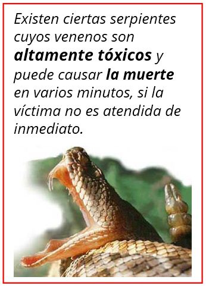
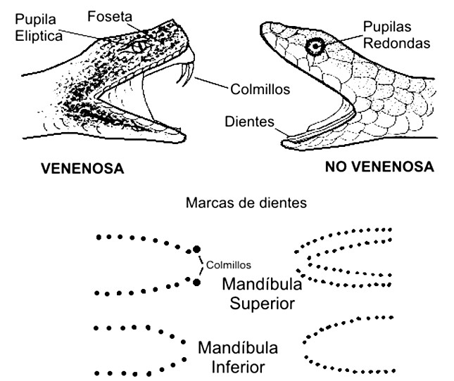
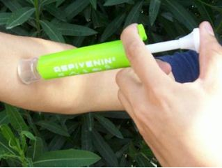

Picaduras y mordeduras
Que hacer en caso de una mordedura de serpiente
Siempre que salimos de paseo al campo, bosque o playa, nos viene a la mente la posibilidad de toparnos con una serpiente.
Las serpientes, por lo general, son animales tranquilos y tratan de huir ante el más mínimo peligro, pero sin las molestamos ellas atacarán como instinto de supervivencia.
Por eso lo más pertinente es evitar tropezarnos con ellas de manera accidental.
Para ello es recomendable:
- Usar botas cuando caminemos entre la maleza o pastos altos.
- Evitar hurgar madrigueras ni agujeros en el suelo.
- Usar un palo o garabato, para ayudarte al cortar monte o maleza.
- Usar guantes de carnaza o similar, al levantar tronco, remover piedras o buscar leña.

Hay serpientes de todos tipos, algunas son venenosas y otras únicamente muerden sin inyectar sustancia tóxica alguna.
Las marcas de la mordedura de una serpiente venenosa se caracterizan por la presencia de pequeños orificios sangrantes, con dos más grandes y profundas (colmillos).
Las de la mordedura de una culebra NO venenosa se son una serie de puntos sangrantes (sin colmillos) en hilera, paralelos y superficiales; no se presenta inflamación ni dolor.
1 Pide ayuda médica urgente, luego intenta atrapar a la serpiente, su identificación es de suma importancia para el tratamiento. Pero si esto no es posible no pierdas el tiempo o te arriesgues a ser mordido.
2 Recuesta a la víctima, ya que la excitación acelera la circulación, lo que aumenta la absorción del veneno. No permitas que camine o se mueva, mantenlo abrigado y tranquilo. Quita anillos y todos los objetos que le puedan apretar la parte afectada. Si es posible lava el área afectada con abundante agua y jabón, sin friccionar. No coloques hielo, ni hagas cortes en cruz sobre las marcas de la mordedura.
3 Si la atención médica tardará, considera la opción de succionarle el veneno de la herida, de preferencia, usa el equipo de succión para estos casos.
Si no cuentas con el equipo adecuado, realiza punciones en el área de la mordedura con una aguja hipodérmica estéril (jeringa). Succiona el líquido, será sanguinolento, deséchalo y vuelve a succionar, repite esta acción varias veces (15 a 20 minutos).
En caso de no contar con la jeringa, aplica succión bucal, pero a través de un pedazo de plástico (bolsa), para evitar entres en contacto con el veneno. Realiza esta acción durante 30 minutos.
4 Cubre el área lesionada con gasas o apósitos y luego aplica un vendaje compresivo ancho y apretado (pero no en exceso), la venda debe quedar lo bastante tensa como para ocluir las venas superficiales y los vasos linfáticos, pero nunca obstruirá la circulación arterial. Esta medida evita la circulación del veneno y ofrece un tiempo de seguridad, hasta conseguir atención médica. Una vez puesto el vendaje de compresión NO lo debes de quitar por ningún motivo, hasta que al paciente no reciba atención médica. Mantente alerta para prevenir el shock.